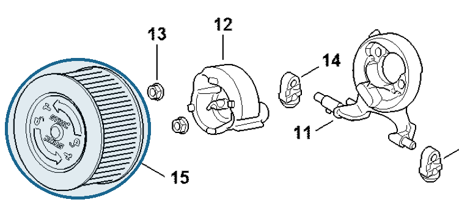

Air filter HD2
1142 140 4402
MS 462 — air filter
HD2 air filter on the carburetor bracket.
Item 15 Qty listed: 1

MS 462 C-M Z spare-parts list, 10/29/2024. Drawing p. 27; parts table p. 28.
1142 140 4402
HD2 air filter on the carburetor bracket.
Item 15 Qty listed: 1

MS 462 C-M Z spare-parts list, 10/29/2024. Drawing p. 27; parts table p. 28.